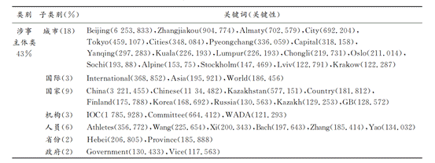
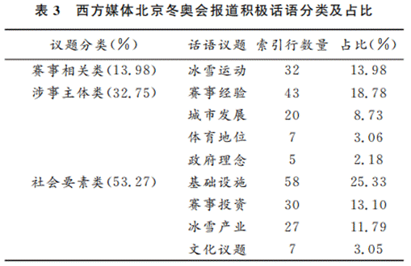

冬奥会期间西方媒体的正面评价评析：............................................................... 5
冬奥会期间西方媒体的负面评价评析：............................................................... 5
霸权常识化：西方新闻界的后真相语境...................................................................... 6
加拿大媒体评价中国形象的分析：............................................................................. 8
BBC与CNN对中国形象不实报道的评析：................................................................... 9
在疫情期间西方对中国反智主义的媒介传播原因探究：........................................... 11
从纽约时报看西方媒体对中国经济的形象：............................................................. 12
1.随着中国放宽冠状病毒限制，混乱和焦虑随之而来
2.中国与世卫组织秘密协议隐瞒新冠病毒的起源：报告称，在北京的“侵略性”影响运动导致有关实验室泄漏理论的质疑被放弃后，世界卫生组织官员错过了阻止大流行的机会。
——华盛顿邮报
3.“中国政府故意限制世界卫生组织获取病毒样
本，篡改了有关案件总数的信息。
并且在全球范 围内散布了错误信息。”
——纽约时报
4.“一些心怀不满的公民在网上发布了他们的不满
情绪，指责政府限制了他们的行动自由”
——卫报
1.日益富裕的中国消费者对通用汽车和微软等美国公司的盈利希望至关重要。公司也不能轻易复制他们在其他地方的生产安排。中国的港口、公路和铁路网络是世界上最好的，这使得任何放弃中国的计划都变得复杂。
“除非有真正的政治压力，否则我不认为，”北京大学光华管理学院金融学教授迈克尔·佩蒂斯（Michael Pettis）说。“一旦新冠疫情过去，真正重要的是，如果你将制造业转移到中国以外，你的竞争力就会立即下降。”
——华盛顿邮报
2.“中国继续看到一连串的上行活动......因为重新开放措施是一个明确的买入信号，“SPI资产管理公司管理合伙人Stephen
Innes表示。“在中国更进步的政策演变出乎意料地到来之后，我们正处于翻天覆地的变化中。美国银行周三发布的亚洲基金经理月度调查显示，在可信的政策行动解决了关键问题之后，投资者现在对中国有了“战术上的建设性”看法。
——CNN
3. “一个 2000年汽车销售量为60
万辆的国家……在2009年销售量就接近1500万辆。任何一个国家都没有比它更多的外汇储备（2.2万亿美元）。任何一个国家都没有比它更多的网民（3.
8 亿） ……每一座大城市都在修建五星级酒店，
而且这个国家新建的机场会令美国的机场看起来特别寒碜。”
——纽约时报
1.
特鲁多周二在三年多来与习近平的首次会谈中对中国涉嫌国内干预表示“严重关切”。渥太华最近几周指责中国政府干涉其民主制度和司法制度，此前两国关系紧张多年。
——每日邮报
2.中国被指控在英国经营“秘密警察局”：民权组织声称执政的共产党正在利用伦敦和格拉斯哥的“反欺诈中心”迫使其批评者返回——因为国会议员要求调查“非常令人担忧”的指控
——每日邮报
3.美国国防部长阿什·卡特（Ash
Carter）呼吁中国停止向南中国海的领土扩张，南中国海是一个资源丰富且有争议的领土。“所有声索国应立即和持久地停止土地复垦。我们还反对将有争议的地物进一步军事化。我们都知道南中国海争端没有军事解决方案。美国正在考虑在这些岛屿上空执行比以前更近的监视任务，并在距离这些岛屿数英里的范围内航行美国军舰，作为美国在该地区新的，更强大的军事态势的一部分。“奥运会给了中国一个展示其国际影响力的机会，它不希望讨厌的活动人士破坏这一点并谈论其侵犯人权的行为，”他说，并补充说，许多着名的维权人士“一直受到国家安全部门的监视”或受到其他控制措施。
人权专家表示，对维权人士和言论的镇压——从关闭社交媒体账户到软禁、拘留或强迫失踪——在中国敏感事件之前是典型的，共产党对异议人士保持严格控制。
“关键是要防止维权人士与外界之间有任何接触，在这些事件中，外界往往更关注中国正在发生的事情，”总部位于纽约的非营利组织人权观察（Human
Rights Watch）中国部高级研究员王松莲（Maya
Wang）说。
——CNN
4.中国政府在新疆西北部地区的行动可能构成“危害人类罪”。美国国务院指责中国将多达200万维吾尔人和其他少数民族关押在拘留营中，去年甚至称其为种族灭绝。
——CNN
从社会要素类关键词表中能够明显看出西方媒体对于北京冬奥会的关注并不局限于赛事本身，还包括主办国家及城市的政治、经济、文化等诸多层面，反映了积极与消极两方面的话语焦点。一方面，国际冬季博览会、基础设
施建设、冰雪产业等经济议题成为西方媒体的关注焦点，不仅表明冬奥
会对举办国经济的推动作用是西方媒体热切关注的
问题之一，也表明中国作为新兴经济大国和全球经济事务参与者的重要性与日俱增，相关议题催生了西方媒体的报道框架，促使西方媒体越来越关注中国作为一支重要的经济力量在国际事务中的地位。相比之下，西方媒体过往对中国国家形象的话语表征中明显缺乏文化议题，此次关键词所体现出的文化议题则成为北京冬奥会议程中国家形象建构的重要突破，“Ｄｗｅｎ”“Ｍａｓｃｏｔ”等词汇表明，吉祥物“冰墩墩”已成为北京冬奥会中关键的文化传播符号，表明此类传播方式提升了中国文化的亲和性，拓宽了冬奥会期间文化传播的合法性路径。
另一方面，环境、政治等议题表露了西方媒体的负面话语表征。其中，新冠疫情（Ｃｏｒｏｎａｖｉｒｕｓ）作为百年一遇的全球性危机，其关键性远低于雾霾（Ｓｍｏｇ）一词，这表明，西方媒体在对北京冬奥会的报道中选择了规避中国在疫情防控方面的成就，凸显雾霾、环境污染等负面议题的报道倾向，沿用了以往涉华报道的负面框架，呈现出明显的西方资本主义霸权与西方媒体集团的意识形态融合模式，倾向于建构以西方利益为核心的叙事框架。
其次，西方媒体将人权（Ｈｕｍａｎｒｉｇｈｔｓ）作为干扰受众认知的工具，以其惯用的“污名化”手法，试图将中国所展示的积极形象“淹没”在负面的政治话语之中。由于政治制度和文化传统的差异，西方国家在政治形式、人权等方面形成了与中国完全不同甚至相反的意识形态，为了维护其所隶属的具有操纵性和非公正性的新自由主义国际秩序的利益，西方媒体以“人权”作为政治工具推动其负面报道的“常态化”。因此，政治制度、意识形态、利益追求和西方媒体惯用的负面报道框架是导致报道话语中建构中国国家形象复杂性的主要因素，这种复杂性增加了西方媒体话语表征中国国家形象时对抗和冲突的可能，因为意识形态主导下的西方媒体必须通过负面“他者”的塑造来强化“自我”的认同。
与以往的“妖魔化中国”相比，西方媒体对中国经济、社会、文化和体育形象的建构略有改观，议题设置更加多元，客观性和积极性的话语比例有所提升。这表明，中国国家形象在国际社会的建构与传播境况已今非昔比，多次举办国际重要赛事的成功经历让世界看到了中国的崛起，逐渐扭转西方发达国家所主导的“妖魔化”论调，也使中国国家形象亟待重塑与定义。其次，目前西方媒体主要围绕经济发展设置议题，呈现出以“经济崛起”为主调的国家形象，凸显了中国在冬奥会事务中所具有的优势，即雄厚的财力支持、庞大的市场规模、崭新的基础设施以及高速发展的市政工程等。由此可见，在全球经济震荡、世界格局一体化趋势不断深化的背景下，经济发展是国际媒体广泛关注的核心议题，是助推国家形象塑造的重要动力。
将国际体育事务政治化以及对中国国家形象的污名化，误导国际群众眼中的中国形象是部分西方主流媒体惯用的报道手法，这种误导性的消极话语淡化了中国在国际赛事中传递的积极信号，在过往中国举办的大型体育赛事中也有所体现。Ｔｏｆｆｌｅｒ认为，权力影响下的媒体话语带有清晰的权力标记，通过独特的话语规则与表征方式，传播权力所需的意识形态。作为话语意义表达的突出层面之一，媒体可以通过对话语表征的选择、引用以及凸显改变特定客体的形象，并以此影响不同个体和群体间的权力关系。在西方意识形态主导的语义下，中国在国际体育事务中的成就和表现被蒙上“中国威胁”的阴影，有关中国的政治议题在媒体的“幻想”下被选择性搭建与重构，其报道框架表面上反映出意识形态影响下西方媒体对“他者”形象建构的固有偏见与刻板印象，本质上却是西方媒体通过话语对权力结构的重构与再塑，以及对话语客体所处世界的意义创造。在此报道框架下，西方媒体着力将中国描绘成一个迅速崛起但同时又存在诸多发展“弊端”的“问题他者”，其本质是西方冷战对峙思维向体育范畴的进一步拓展，通过北京冬奥会议题来建构不断演化的“中国威胁论”内核。
在层出不穷的虚假新闻背后，我们不禁要问：向来以“新闻专业主义”和“新闻自由主义”标榜的西方新闻界，缘何会近乎集体地陷入“只顾情绪不顾事实”的后真相时代？葛兰西曾指出：“自发性的常识是一种‘自在’的意识，它在很大程度上只是不同社会集团在文化领域相互博弈的产物，资产阶级维系自身霸权的秘密在于将自身的世界观普世化为民众的常识。”同样，当面向世界时，西方国家维系其霸权的秘密在于将自身的价值观普世化作为常识的“普世价值”。在这个过程中，西方媒体自身被其国内资产阶级实现了霸权常识化，同时也充当了面向世界霸权常识化的机器。一些西方国家媒体对内以私有制面貌出现，维护资本主义私有制，成为资本主义意识形态重要的“霸权装置”，通过新闻报道、宣传、影视、广告等活动，把资产阶级的特殊利益描述为社会的“普遍利益”，以此操纵民意，掩盖资本主义的本质；对外则以“新闻自由”为标榜，歪曲、抹黑不同立场、不同阵营的国家，鼓动他国舆论，制造各类“颜色革命”。三是西方价值观的“双重标准”西方价值观存在的一个明显悖论是，对内评价标准与对外评价标准不一致，出现价值分裂。其根源正是西方中心主义与霸权主义的作用，使得西方国家自视高人一等，以自己为“真理”的标准，容忍不了不同价值体系国家的“平视”，即便是同一事件，发生在西方国家与非西方国家也会得到完全不同的评判。这种分裂的价值观致使西方媒体的国际报道已进入后真相时代。实践中，西方媒体在报道中国议题时，几乎集体陷入后真相语境：一方面，对不利于自身的做法进行“污名化”和“妖魔化”；另一方面，其自身所做的同样行为，则通过话语转型的方式隐藏起来。受此影响，西方国家的政府、议会、媒体对中国充斥着大量的傲慢与偏见，“反华”“反中”成为西方国家尤其是美国的“政治正确”。他们以所谓民主制度、普世价值为幌子，向世界散播战争和“颜色革命”的种子，在高举人权旗帜的同时不断侵犯他国人权，人权、民主、自由成为西方国家推行霸权的工具，丧失了其本有意义与价值。同时，一些秉持事实的客观介绍与解读，会遭受指责乃至围攻，出现沉默的螺旋与寒蝉效应。而对于普通民众来说，由于媒体对中国的报道少、偏见多，导致普通民众对中国的了解十分有限，在固有价值观基础上，对中国知之甚少，产生刻板印象，甚至会产生反华、反中情绪。
加拿大新闻媒体评判中国人物形象，大都为“高大”“年轻”“富有生命力活力”，认为中国人的生命力较为“顽强”，其能够在不同的困境中生长生存，并且在此环境中取得良好的自我发展与创新成效。《环球邮报》的很多记者都在文章中谈到了自己对中国人的印象，其中有提及“中国人难以置信的活力，愿意勤奋工作，也有提及“他们以惊人的能量埋葬他们的过去”，发展的步伐无止无息，发展的结果令人振奋吃惊”等，可见在加拿大媒体眼里，中国人民以富有生命力活力的身躯，以顽强的意志力，以聪慧的头脑的形象不断刷新他们的认识，因此，加拿大媒体对中国人民的评价较为认可与崇尚，加拿大的国人通过媒体得以了解到现今的中国已不再是从前落后的大国，而是已经发展到令人刮目相看的地步。
加拿大在《环球邮报》中多次指出，中国经济发展之迅猛，并积极总结中国经济发展中不容忽视的六大优势因素：包含国内市场规模巨大、人们的壮志雄心、不断健全的国际贸易体系、以市场为导向的务实性经济改革、数字经济的巨大崛起、全新的公共基础设施。近年来《环球邮报》开始将重点放在中国经济报道上。
加拿大媒体《环球邮报》总编辑曾说，“我们正在见证一个超强中国的崛起。”该报刊曾以“雄心勃勃、实力雄厚、准备迎接、中国世纪”其英文标注的字体意在提示读者说“如果你不认识这些字，
最好赶快学，因为你正面临一次全球性的深刻变化，一生中也难得遇到几次，在时代潮流前不要落伍了”足可见其对我国文化的认同。总之，中国文化不仅受到加拿大国家重视，也在其他国家发展中得到认可与研究，打造了中国国家文化良好形象。
第一，两家媒体将中国政治形象刻画为中国政治发展集权化；在香港地区存在诸多形式的抗争；中国加强地区军事存在，挑起地区军备竞赛。对于中国“他者”政治形象的刻画，离不开西方自我政治发展的比对。单就BBC与CNN涉华推文来看，其主要是对中国与西方政治社会的偏离进行差异化描述，形成异质化政治环境空间。异质化空间存在模糊的可能性，也就是中性立场，但对于西方受众来说，当这一空间被描绘成神秘、冲突、控制与反控制时，异质化的政治空间就陷入了冲突的框架。在这一框架中，中国所有的合理动作被赋予了新的内涵，历史性政治改革成为政治阴谋，庆祝性的“辽宁号航母访港”被解读为“武力炫耀”，程式化的阅兵被解读为“秀肌肉的控制力”。
第二，经济上，两家媒体在Twitter上描绘了一个经济发展平稳、互联网产业蓬勃发展的中国。英国属传统经济金融强国，从BBC的Twitter推文数量可以看出，其更加注重报道中国经济形势的发展。中国经济进入新时代，步入稳步、高质量增长阶段，BBC推文China’ economy grows faster
than expected（比预期增长更快）是对中国经济发展新形势的肯定。美国在己注重的优势领域与中国他者公司作比较，一方面凸显中国科技产业的创新发展形象，另一方面也体现通过与他者的对比，认识自我存在和发展的意义。
第三，在社会发展层面，两家媒体描绘了一个人权问题突出、法制道德问题频发、互联网审查机制异常严苛的中国“他者”形象，主要表现在言论自由无法保障、不同政见被打压、学生弱势群体及动物权利遭受侵害等。西方用“绝对自由”“反抗”等价值观对标中国“他者”在社会发展进程中的问题，对中国“他者”的社会形象进行简单的标签化处理。例如，“强大的政府采取残暴措施打压异见分子”的标签简化的是政府行为，将国家机器运作途径简单概括为“收监”（jail）、“镇压”（crackdown）、“监管”（censor）等。在几乎所有的人权类推文中都用到了“crack
down”（镇压）一词，简单化的词汇重复给中国政府贴上“野蛮单一行为”的固定标签。仔细分辨，这些推文省略的是新闻“5W”里面的Why（为什么），强调的是针对how（怎么做）的立场情绪化放大。
第四，在中国与国际关系问题上，两家媒体都建构了一个在国际气候变化议题上负责任的中国形象，但同时也都建构了一个与周边国家有领土争端且恃强凌弱的中国“他者”形象。从凝视者的视角看，作为他者的中国，不论是中俄联合军演，还是“一带一路”倡议，都是挑战西方中心主义、颠覆现有世界秩序的行为。BBC与CNN推文强调中国在气候问题上的担当，并予以肯定，这也反映出凝视者从被凝视者身上发现、反思自我行为的互动性。
此次疫情期间西方媒体刊登的许多反智报道与中国有关，究其原因主要是受到冷战思维和麦卡锡主义的影响。自武汉暴发疫情以后，曾经隐匿于西方媒体中的“麦卡锡症候”迅速凸显。在此类反智报道中，西方媒体把中国当成假想敌，以“中国霸权论”“反中反华反共”为主要观点。在报道内容上，从贬低政体国体转向担忧人权，从指责新闻制度转向指控我国疫情的信息造假，从质疑公共卫生安全转向追责中国。西方主流媒体和社交平台上充斥着对中国人民的“担忧”和对中国称霸世界的控诉。
从纽约时报的报道中可看出其认为中国经济形象的特点：
中国自身：经济迅速发展和政府操纵货币。中国与美国：经贸摩擦不断、竞争与合作并存。中国之于世界：利用经
济扩大政治势力与影响世界发展。中国的国家经济形象可以总结为：中国是一个自身经济发展迅速，然而政府人为操作货币促进出口，造成不公平竞争；虽然与美国贸易摩擦不断，甚至威胁到美国的超级大国地位，但是中国同时也是良好的合作伙伴；中国利用自己的经济实力进行政治势力的渗透，同时其对世界经济
的发展有着重大的意义。总体而言，中国的国家经济呈负面形象。
为什么在西方媒体的报道中，中国的经济形象一般呈负面呢？笔者认为可能的原因有：寻找矛盾和冲突、重视批评性和揭露性报道的传统新闻价值观的影响；意识形态的强力支配；出于国家利益和商业利益而对日渐崛起的中国保持着警惕戒备甚至是敌视的心理；在华记者由于认知水平的限制、对中国历史文化知识的欠缺，在报道的时候对于不符合西方观念的经济事件给予了负面的报道。西方媒体对中国经济形象的塑造多为负面，恶化了中国在国际上的形象，影响了中国生存与发展的国际环境。我们可以通过对西方媒体涉华报道的分析，努力提高传媒的对外传播水平，提升我国的国家经济形象。
北京冬奥主题关键词及类别
其 一，作为北京冬奥会的 “主 要 角
色”，“Ｃｈｉｎａ”“Ｃｈｉｎｅｓｅ” “Ｂｅｉｊｉｎｇ” “Ｚｈａｎｇｊｉａｕ”
“Ｙａｎｑｉｎｇ”“Ｃｈｏｎｇｌｉ”等 中 国 及 其 区 域 性
词 汇，以 及 “Ａｓｉａ”“Ｗｏｒｌｄ”“Ｉｎｔｅｒｎａｔｉｏｎａｌ”等国际性词汇的关键性较高。
其二，“Ｔｏｋｙｏ”“Ｐｙｅｏｎｇｃｈａｎｇ”“Ｓｏｃｈｉ”等词汇表明，西方媒体将北京冬奥会放置于历史语境中，尝试通过对比建构中国在此次奥运会中的国家形象，这在一定程度上反映了西方媒体对于东亚国家连续３次举办奥运会的广泛关注。
其三，习近平等国家领导人和政府相关词汇关键性较高，反映出中国政府有关冬奥会的决策、声明等成为西方媒体的重点关注与解读对象，表明冬奥会是树立政治形象、传播“中 国 理 念”的 重要平台。
西方媒体对社会形象的建构
依据揭示西方媒体对中国国家形象的话语意义建构这一研究目的，选取了“Ｃｈｉｎａ”作为检索词，利用ＡｎｔＣｏｎｃ
在 北 京 冬 奥 会 语 料 库
中 检 索 到 索 引 行５８９条。根据索引行所呈现出的话语意义，对索引行进行了态
度 分 类，包 含 积 极 话 语
２２９ 条、消 极 话 语１４７条，以及中性话语２１３条。
积极：

其一，构建了中国作为新兴奥运大国的积极
话语。“ａｇｏ－ｔｏｃｏｕｎｔｒｙ”“ｇｒｅａｔｅｘｐｅｒｉｅｎｃｅ”“ｓａｆｅ ｃｈｏｉｃｅ”
等话语肯定了中国举办２００８年北京奥运会的能力，也使中
国 的 国 际 地 位 获 得 了
世 界 首 肯，“ｓｉｇｎｉｆｉｃａｎｔ
ｒｏｌｅ”“ｅｍｅｒｇｉｎｇ
ｓｕｐｅｒ ｐｏｗｅｒ”等话语明确证实了这一观点；此次冬奥会的举办城市也是西方媒体报道的焦点，运用“ｅｍｅｒｇｉｎｇｈｏｔｓｐｏｔ”“ｔｈｅｆｉｒｓｔｃｉｔｙ”等话语赞许了北京的国际形象与张家口的城市建设。由此可见，报道话语为冬奥会创造了良好开端，通过肯定中国举办赛事的能力、陈述中国的国际地位以及报道中国的举办城市，表明中国无论在综合实力、国际地位
还是城市发展等方面都具备绝对的优势。
其二，大量转述中国政府及领导人话语，展现出政府
对 举 办 冬 奥 会 的 官 方
态 度 与 理 念。“ａｇｒｅｅｎ，ｓｈａｒｉｎｇ，ｏｐｅｎ
ａｎｄ ｃｌｅａｎ－ｆｉｎｇｅｒｅｄ
ｍａｎｎｅｒ”“ｅｎｈａｎｃｅ
ｒｅｇｉｏｎａｌ ｐｅａｃｅ
ａｎｄ ｓｔａｂｉｌｉtｙ”“Ｂｅｌｔ ａｎｄ
Ｒｏａｄ ｒｏｕｔｅｓ”等话语转述了中国举办冬奥会的理念，传播了中国和平、发展、合作、共赢的外交原则以及“一带一路”等国家顶层合作倡议的共商、共享、共建原则，促进了中国特
色 外 交 形 象 的 对 外 传
播。
其三，赛事投资、基础设施建设和世博会等社会要素类议题为中国提供了大量积极话语。运用一系
列精 确 数 值，如 “３５０ｋｍ－ｐｅｒ－ｈｏｕｒ”“３０ｂｉｌｌｉｏｎｙｕａｎ”
“１６００００
ｖｉｓｉｔｏｒｓ”等，表述中国在北京冬奥会中的赛事投资、基础设施建设以及世博会游览规模，“ｗｏｒｌｄ’ｓ
ｆｉｒｓｔ”“ｍａｊｏｒｂｏｏｓｔ”“ｓｔｒｏｎｇ ｉｍｐｅｔｕｓ”等话语体现出西方媒体对相关事务的高度认可，其发展离不开中国强大的经济发展作为支撑。
综上，与以往的“妖魔化中国”相比，西方媒体 对中国经济、社会、文化和体育形象的建构略有改观，议题设置更加多元，客观性和积极性的话语比例有所提升。
2. 消极：其中，与政治议题相关的消极话语占比为５１．０３％，映射出西方媒体消极报道
的“政治体育”镜像。
其一，以 人 工 造 雪 刻
画 中 国 冰 雪 基 础 薄 弱。例
如，运用“ｄｅｓｐｉｔｅ…”“ｂｕｔ…”等让步、转折句式来拓展
话语空间，在承认中国已有成就的同时，抨击中国冰
雪基础薄弱的负面形象，使负面话语显得理性、客观。
其二，围绕工业发展营造负面信息。其中，运用 “ｄｅｓｐｉｔｅ”拓展话语空间的情况依然存在，试图消解经
济发展带来 的 积 极 形 象。此
外，西 方 媒 体 还 将 “ｂｅｓｔ
ｋｎｏｗｎｉｎ”与工业发展和空气污染联系在一起，并通过
“ａｌｓｏｂｌａｍｅｄｆｏｒ”“ｒｅｍａｉｎｓｃｈｏｋｅｄｗｉｔｈ”等话语，遮蔽 工业发展、经济发展等积极形象，引导受众对北京冬奥会的负面因素进行“框选”，进一步通过此类报道强
化中国负面形象。
其三，以政治议题渲染“恐华”论调。政治议题是西方媒体构建消极话语的主要议题，通过报道部分国家反对中国举办冬奥会的声音，运用大量重复的消极政治议题和夸张的叙事手法，从人权（ｈｕｍａｎｒｉｇｈｔｓ）等多方面展开对中国污名话语的反复论述与佐证，并未摆脱其涉华报道中负面的、选择性的议程设置
综上，将国际体育事务政治化以及对中国国家形象的污名化，误导国际群众眼中的中国形象是部分西方主流媒体惯用的报道手法，这种误导性的消极话语淡化了中国在国际赛事中传递的积极信号，在过往中国举
办 的 大 型 体 育 赛 事 报
道 中 也 有 所 体 现 。
结论：
西 方 媒 体 对 北京冬奥会的话语表征
呈 现 出“一体多面”的叙事特点，对北京冬奥会进程中的中国国家形象
进 行 了 多 维 度、多 层 面
的 话 语 建 构。一 方面，西方媒体认可中国在体育、经济、社会等方面的发
展成就，以及中国日益增长的国际地位及在国际事务
中的广泛影响力；另一方面，西方媒体采取了凸显中
国负面形象的议程设置，在其北京冬奥会报道中延续
了以往涉华报道的负面框架。这表明，西方媒体视野
中的中国国家形象并非是稳定和统一的，而是矛盾且
动态的，有助于了解中国国家形象在冲突情境下中西
方关系的多样性和复杂性，以及政治制度、国家利益
等潜在因素是如何推动这种多样性和复杂性的
2. 与以往的“妖魔化”中国相比，西方媒体对中
国国家形象的话语建构略
有改观，议题设置更加
多 元，客观性和积极性的话语比例有所提升。这表明，
国家形象的话语建构意义在北京冬奥会这一特定时
刻更加凸显，在我国推进体育强国的战略背景下以及
“一带一路”建设的历史语境下，关注重大国际体育赛
事对国家形象的海外建构无疑将为中国国家形象在
海外的整体传播提供新的契机与探索路径，有利于向
世界更好地展示中国特色、中国风格、中国气派，为讲好“中国故事”提供了机遇与平台。
3. 经济发展是助推国家形象塑造的强大动力，
在相关的报道框架下，中国被塑造成全球经济发展的
重要推动者和国际经济秩序的维护者。
4.西方中心主义的话语模式，维护了西方媒体“自我”与“他者”之间的社
会文化差异，反映了西方媒体在全球话语体系中对“中 心”及“边缘”或“半边缘”国家的划分。西方意识形态偏
见及对中国崛起的“霸权焦虑”仍是阻碍推进中国国家
形象对外传播的制约性因素，也进而影响了中国在国际
事务中进一步提升话语权的尝试
主流：
通过对近年西方国家主流媒体进行系统性阅读与观察、分析，可注意到以英美媒体为首的西方主流媒体的涉华报道有不少值得关注的新手法、新特征，其涉华舆论已带有明显的“舆论战”特征。
一是美英主流媒体牵头，挑起话题，其他一些西方国家的主流媒体“众犬吠声”，相互应和，力求造成系统性孤立、围攻中国的舆论态势。这是美欧等西方国家把中国视为“系统性对手”在国际舆论斗争中的直接反应。正是这种在舆论战线力求系统性孤立、围攻中国的态势，使得美西方涉华舆论具有了国际舆论战的一般特征。
二是美西方主流媒体涉华负面报道与其政府涉华负面言论、负面政策宣示相互唱和，甚至每当美英等西方国家政府及其官员发表涉华负面言论和挑衅性政策时，其主流媒体通常一拥而上，进行解读、论证，为其政府及其官员的涉华负面言论与政策造势、背书，而美西方政府也有意引导其主流媒体为贯彻其负面涉华宣示和政策造势。
三是蓄意搞“选择性失明”，即直接违反所谓以“客观报道为最高原则”的“新闻专业主义”，在涉华重大问题、战略性问题上罔顾事实，极尽污蔑、攻击之能事，一切以“污名化”中国为归依，凡是涉华正面报道，一概视为“政治不正确”。